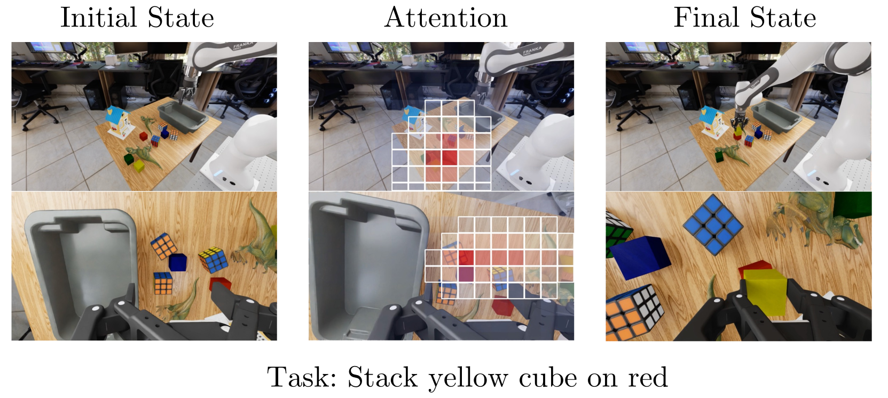
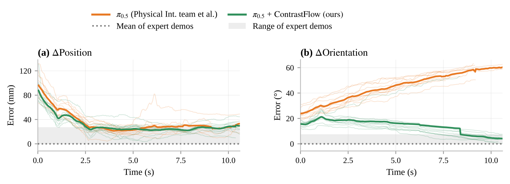
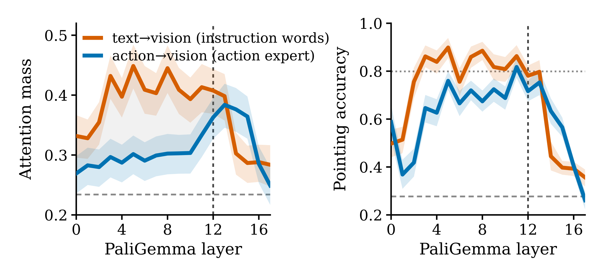

A test-time correction for frozen flow-based VLAs. The policy’s own text-to-vision attention selects the
evidence for the instruction; that evidence is withheld to form a counterfactual observation; the contrast between
the two action-flow predictions is added back into the flow. No weights are changed and no second model is used.
Attention picks the evidence (red cells) → mask it → predict the flow twice, v+ from the full image and
v− from the masked one → add the contrast to v+ and integrate.
+6.2
points on RoboLab-120 (+8.8 on complex tasks)
+9.2
points on LIBERO-PRO spatial position swap
30 → 75%
real-robot cable insertion with π0.5
0 → 43%
real-robot adapter relocation with StarVLA
Method
At each guided Euler step the frozen policy is evaluated twice at the same noisy action chunk: v+ from the
full observation and v− with the attention-selected visual embeddings zeroed. The guided velocity is
v+ + ω v⊥, where v⊥ is the component of
v+ orthogonal to v−. Translation and rotation are guided; the gripper follows v+.

Attention selects the task-relevant objects. The score matrix (centre) is read from the vision-language
tower at a fixed layer, with attention sinks removed. Its top-ranked tokens are the ones A2F zeroes in the counterfactual branch.
Three predictions during one action-chunk integration. Orange: counterfactual branch v−.
Blue: baseline v+. Green: the guided prediction A2F executes, steered away from where the policy would act without looking.
Why it works
A toy flow model is cued toward a familiar goal while noisy evidence points to the current goal. Withholding
the evidence exposes the familiar-goal bias; adding the contrast back corrects it while keeping the endpoint geometry valid.
Pooled endpoints over three seeds. Baseline: 54.6% at the current goal. Evidence withheld: 9.5%. Guided (ω = 1): 83.0%.
Against an oracle velocity, the contrast removes 95% of the squared velocity error early in the flow.
Simulation results
🧪 RoboLab-120: zero-shot task generalization
Table 1. Success rate (%), 120 tasks × 10 rollouts, by difficulty. One fixed A2F configuration on all tasks. Best per column in bold.
Method
Overall
Simple
Moderate
Complex
π0-FAST
15.5
20.2
13.3
2.9
GR00T N1.6
7.2
8.8
7.9
0.0
DreamZero
25.7
26.1
30.0
14.1
π0.5
27.4
30.5
27.2
16.5
Cosmos3
36.8
40.6
35.4
25.3
π0.5 + A2F (ours)
33.7
35.5
34.4
25.3
Δ vs. π0.5
+6.2
+5.0
+7.2
+8.8
Cosmos3 + A2F (ours)
40.0
44.8
34.4
34.7
↔️ LIBERO-PRO position swap: grounding vs. memorised layouts
Table 2. Success rate (%) with frozen π0.5, 500 trials per cell. All rows are test-time interventions on the same policy. A2F is the only method that improves all four suites. Best per column in bold.
Table 3. Real-world success rate (%) by task and backbone. A2F is applied at test time to the same frozen backbone. “–” = not run.
Backbone
Method
Cable insertion
Adapter relocation
π0.5
Base
30.0
20.0
PCD
59.2
33.3
TAG
–
30.0
A2F (ours)
74.7
62.5
StarVLA
Base
24.0
0.0
A2F (ours)
56.0
43.0
🎯 A2F keeps converging where the base policy stalls

Cable-insertion rollouts with π0.5: end-effector position (a) and orientation (b) error relative to the expert
final pose. Green band: spread of the expert demos. (“Counterfactual Evidence Guidance” in the legend is an earlier name for A2F.)
Analysis: the words find the evidence first

On 56 π0.5 RoboLab rollouts, the instruction words’ attention sits on the task objects from layer 3; the
action expert’s catches up only at layers 11–13. A2F reads layer 12 (vertical line), where the two meet.
BibTeX
@article{a2f2026grounding,
title = {Grounding Generalist Policies via Attention-Guided Action Flows},
author = {Anonymous},
journal = {Under review},
year = {2026}
}